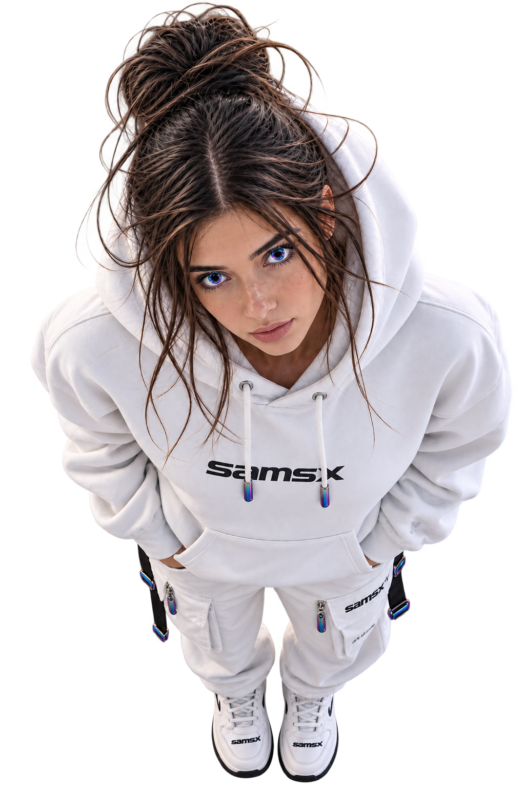
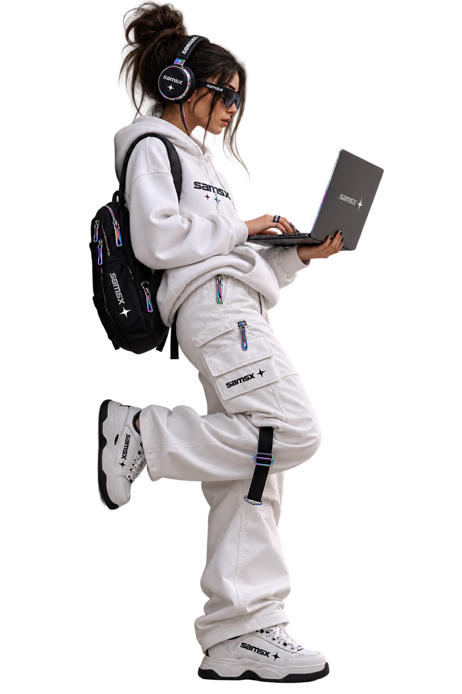

Vulnerability Analysis in Satellite Communication Systems
Resumo sobre protocolos, autenticação e vulnerabilidades em sistemas de comunicação por satélite.
LER RESUMO ↗S6MSX / WHOAMI
Segurança começa onde a curiosidade encontra o método.
Analista de cibersegurança e estudante de Redes de Computadores, com foco em pentest de infraestrutura, redes e CTFs. Exploro sistemas para compreender suas falhas e ajudar a construir defesas melhores.
CONHEÇA MINHA TRAJETÓRIA ↗
A MENTE POR TRÁS DO TERMINAL
Cada camada revela uma nova possibilidade.
WHAT I EXPLORE
Pesquisa aplicada, prática ofensiva e aprendizado contínuo em ambientes reais e simulados.
Exploração de vulnerabilidades e superfícies de ataque em sistemas de satélites.
↗Técnicas, ferramentas e documentação para testes de infraestrutura.
↗Desafios de segurança ofensiva, forense e análise de tráfego.
↗FROM THE ARCHIVE
Publicações e notas sobre segurança ofensiva, sistemas de satélites e infraestrutura.
Resumo sobre protocolos, autenticação e vulnerabilidades em sistemas de comunicação por satélite.
LER RESUMO ↗Resumo sobre métodos de teste, movimento lateral e escalonamento de privilégios em Active Directory.
LER RESUMO ↗
BUILD / BREAK / LEARN / REPEATCODE REPOSITORY
Desenvolvo ferramentas e scripts para automatizar tarefas de segurança. Uso Python, C/C++, Bash e PowerShell para transformar investigação em prática.
OPEN CHANNEL / CONTACT
Tem uma pesquisa, desafio ou ideia em cibersegurança? Vamos conversar.